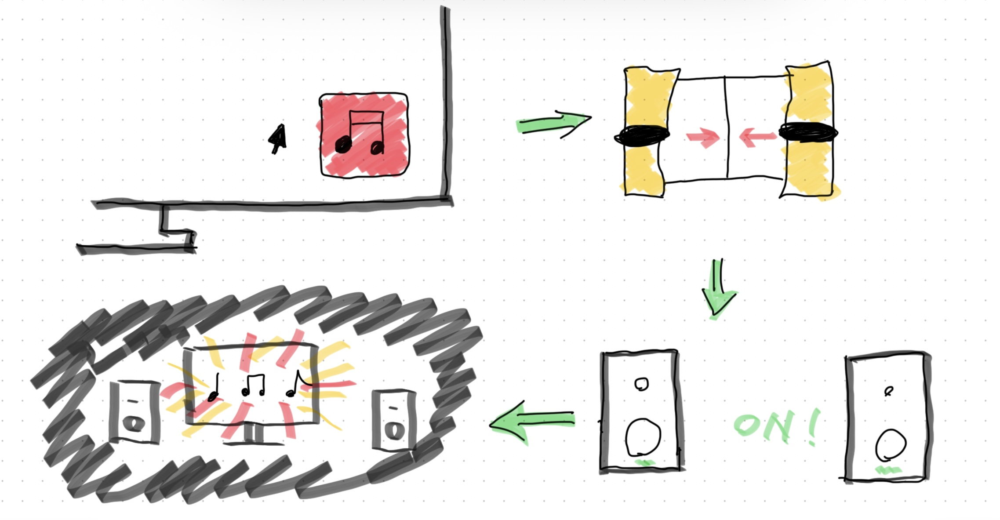

1,プログラムでモノを動かしているものにはどんなものがあるか？
何かを感知して動作するものには基本プログラムが組み込まれていると考えた。
自動ドア、車の自動ブレーキ、街灯など
また、一定の周期で同じ動作を繰り返す装置もプログラムが組み込まれていると推測した。
信号機、チャイムなど
2,プログラミング的な思考で手順を説明
プログラムで何ができる？

自分の願望を詰め込んでみた。
流れは下の通り。
部屋のパソコンで音楽ソフトを開く。
それを検知したコンピュータが、カーテンを自動で閉め、同時に部屋の照明を落とす。
その後スピーカーの電源が自動的にONになる。
あっという間に部屋がホームシアターに変化するのだ。
音楽付きにはたまらない設備が完成した。